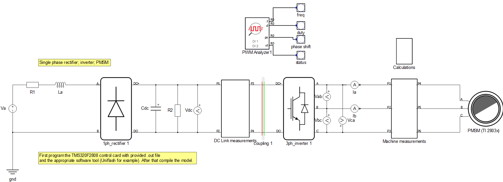
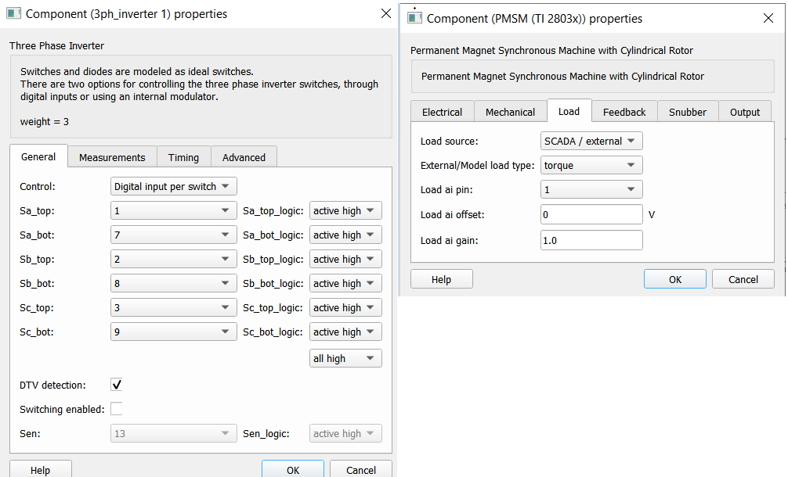
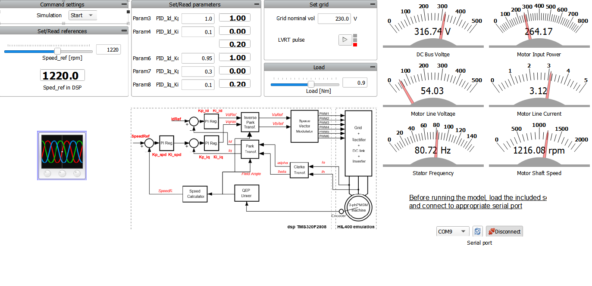
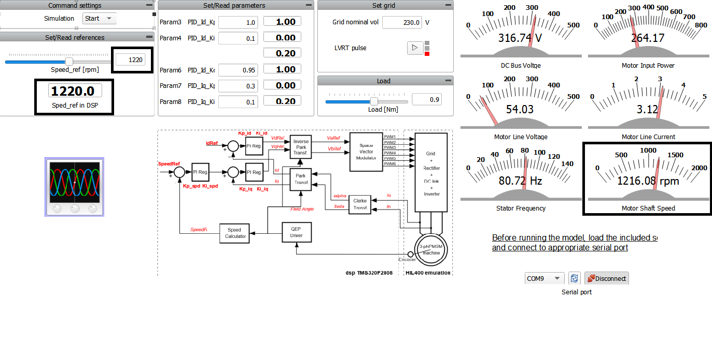
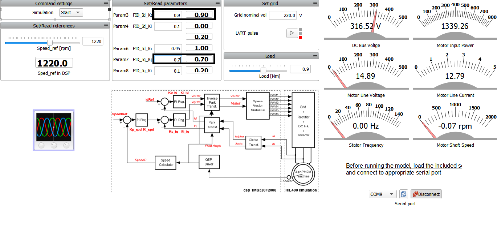
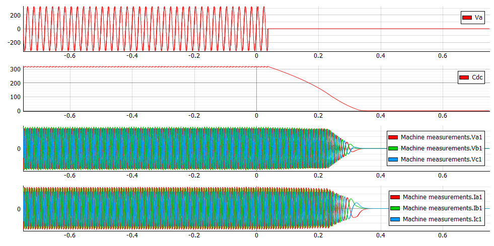

C-HIL: Field-oriented control of PMSM using Texas Instruments TMS320F2808 card
Demonstration on how to use a Texas Instruments card for rapid control prototyping and real-time HIL testing of TMS320F2808 code.
Introduction
Texas Instrument cards are the hardware of choice for those who want to accelerate the development of Power Electronics (PE) applications for the Texas Instrument family of Digital Signal Processors (DSPs). To allow you to properly test with Texas Instrument cards, Typhoon HIL Control Center emulates the power stage of a PE device including power converters, electrical machinery, filters, electrical grid, PV cells, and passive elements. This way, you can develop and immediately begin testing and validating your control applications without worrying about the safety measures required in a power laboratory (P-HIL) environment.
This example shows you how to use an external controller from a Texas Instruments TMS320F2808 card in order to control a model implemented in the Typhoon HIL software. In particular, this section focuses on how you can connect the model with an external control and how they can operate together. While this case study uses a specific Texas Instruments control card as an example, the general process is applicable to a wide range of available cards.
Model description
The model consists of a single-phase rectifier, a three-phase inverter, and a permanent magnet synchronous machine. The single-phase rectifier and the three-phase inverter components are taken directly from the Converter library, while the permanent magnet synchronous machine is taken from the Machines library.

As shown in Figure 1, this model contains only the electrical parts and all components in the model are controlled externally by changing the properties of the components. The operation mode for the three-phase inverter is set to “Digital input per switch”, while the load for the permanent magnet synchronous machine is set to “SCADA / external”, as shown in Figure 2 below.

Before compiling the model, it is necessary to upload the program code to the TMS320F2808 control card. To do so, you will need the .out file provided with this document and an appropriate software tool (for example, UniFlash). UniFlash is a standalone tool used to program on-chip flash memory in TI Microcontrollers (MCUs) and on-board flash. It is available free of charge. To successfully flash the card, it is necessary to follow the steps from How-to flash a TI card and use a serial port widget.
Simulation
This application comes with a pre-built SCADA panel shown in Figure 3. It offers the most essential user interface elements (widgets) to monitor and interact with the simulation at runtime, allowing you to further customize it according to your needs.
Before starting the simulation, you should load the settings file and then run the simulation. The settings file sends analog outputs and scales to signals towards the TI controller as an ABZ signal. Additionally, it contains digital output settings for the emulated machine encoder signals, sent as an ABZ inverted signal. The Settings file (.runx) is located in the same folder as the model and the SCADA file, and it will be automatically offered by the software.

To interact with the simulation, you should set the reference speed. This reference is then sent through the serial port widget to the TI card, which, in turn, sends that reference to the HIL inputs. Figure 4 shows the motor behavior following the set reference.

You can also change the parameters from PID. This is done in the Set/Read parameters group (see the “Set/Read parameters” in Figure 4).

Grid voltage can be changed manually or by using the LVRT (Low Voltage Ride Through) pulse macro button. LVRT is the capability of electric generators to stay connected during short periods of lower grid voltage.

Test automation
We don’t have a test automation for this example yet. Let us know if you wish to contribute and we will gladly have you signed on the application note!
Example requirements
Table 1 provides detailed information about the file locations and hardware requirements for running the model in real-time, followed by the HIL device resource utilization when running the model using this minimal hardware configuration. This information is provided to help you with running and customizing the model as you see fit.
| Files | |
|---|---|
| Typhoon HIL files | TMS320F2808 Example Models/ti pmsm sensored foc* ti pmsm sensored foc.tse ti pmsm sensored foc.cus 20140220_pmsm3_1_TMS3202808.out settings.runx *Downloadable via Package Manager |
| External Tools | UniFlash |
| Minimum hardware requirements | |
| No. of HIL devices | 1 |
| HIL device model | HIL402 |
| Device configuration | 1 |
| Interface |
TMS320F2808 (Hardware under test) |
| HIL device resource utilization | |
| No. of processing cores | 2 |
| Max. matrix memory utilization | 2.25% (core0) 30.81% (core1) |
| Max. time slot utilization | 29.38% (core0) 52.5% (core1) |
| Simulation step, electrical | 1 µs |
| Execution rate, signal processing | 100 µs |
Authors
[1] Jovana Markovic